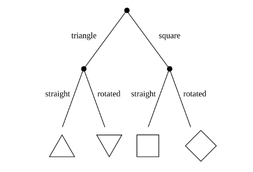

Using a dataset comprised of songs of two music genres (Hip-Hop and Rock), we will train a classifier to distinguish between the two genres based only on track information derived from Echonest (now part of Spotify). We will first make use of pandas packages in Python for subsetting the data, aggregating information, and creating plots when exploring the data for obvious trends or factors we should be aware of when doing machine learning.
Next, we will use the scikit-learn package to predict whether we can correctly classify a song’s genre based on features such as danceability, energy, acousticness, tempo, etc. We will go over implementations of common algorithms such as PCA, logistic regression, decision trees, and so forth.
Project Tasks
Preparing our dataset
Pairwise relationships between continuous variables
Splitting our data
Normalizing the feature data
Principal Component Analysis on our scaled data
Further visualization of PCA
Projecting on to our features
Train a decision tree to classify genre
Compare our decision tree to a logistic regression
Balance our data for greater performance
Does balancing our dataset improve model bias?
Using cross-validation to evaluate our models
1. Preparing our dataset
Over the past few years, streaming services with huge catalogs have become the primary means through which most people listen to their favorite music. But at the same time, the sheer amount of music on offer can mean users might be a bit overwhelmed when trying to look for newer music that suits their tastes.
For this reason, streaming services have looked into means of categorizing music to allow for personalized recommendations. One method involves direct analysis of the raw audio information in a given song, scoring the raw data on a variety of metrics. Today, we’ll be examining data compiled by a research group known as The Echo Nest. Our goal is to look through this dataset and classify songs as being either ‘Hip-Hop’ or ‘Rock’ - all without listening to a single one ourselves. In doing so, we will learn how to clean our data, do some exploratory data visualization, and use feature reduction towards the goal of feeding our data through some simple machine learning algorithms, such as decision trees and logistic regression.
To begin with, let’s load the metadata about our tracks alongside the track metrics compiled by The Echo Nest. A song is about more than its title, artist, and number of listens. We have another dataset that has musical features of each track such as danceability and acousticness on a scale from -1 to 1. These exist in two different files, which are in different formats - CSV and JSON. While CSV is a popular file format for denoting tabular data, JSON (JavaScript Object Notation) is another common file format in which databases often return the results of a given query.
Let’s start by creating two pandas DataFrames out of these files that we can merge so we have features and labels (often also referred to as X and y) for the classification later on.
import pandas as pdimport numpy as np# Read in the file with the track metadata tracks = pd.read_csv('Data/fma-rock-vs-hiphop.csv')# Read in JSON file with track metrics with the track acoustic metricsechonest_metrics = pd.read_json('Data/echonest-metrics.json',precise_float=True)# Merge the DataFrames on matching track_id values # Only retain genre_top columns of tracks (in addition to the key column that we are matching onecho_tracks = echonest_metrics.merge(tracks[['genre_top','track_id']],on='track_id')# Inspect the resultant dataframeecho_tracks.info()
/tmp/ipykernel_116/408970472.py:1: FutureWarning: The default value of numeric_only in DataFrame.corr is deprecated. In a future version, it will default to False. Select only valid columns or specify the value of numeric_only to silence this warning.
corr_metrics = echo_tracks.corr()
As mentioned earlier, it can be particularly useful to simplify our models and use as few features as necessary to achieve the best result. Since we didn’t find any particularly strong correlations between our features, we can now split our data into an array containing our features, and another containing the labels - the genre of the track.
Once we have split the data into these arrays, we will perform some preprocessing steps to optimize our model development.
# Import train_test_split functionfrom sklearn.model_selection import train_test_split# Create features by storing all values of the echo_tracks DataFrame except for the "genre_top" and "track_id" columns.features = echo_tracks.drop(["genre_top","track_id"],axis=1).values# Create labelslabels = echo_tracks["genre_top"].values# Split our datatrain_features, test_features, train_labels, test_labels = train_test_split(features, labels, random_state=10)
So we have 3,601 rows which represent the individual tracks, and 8 columns which are our features. Let’s have a look at a few of the values for our training features and associated labels:
# Show the first 5 train_featurestrain_features[:5]
Let’s check the mean and standard deviation of our training features dataset:
np.mean(train_features),np.std(train_features)
(16.185663138852977, 43.42267453551983)
Our training features have a large standard deviation (broad range of values). The danger here is that the larger value features will dominate our model and smaller, but potentially influential features may be disregarded.
We can address this through normalizing which in simple terms squeezes the values so that they are more centred around zero. The normalized data will have a mean of zero and a standard deviation of one.
4. Normalizing the feature data
As mentioned earlier, it can be particularly useful to simplify our models and use as few features as necessary to achieve the best result. Since we didn’t find any particular strong correlations between our features, we can instead use a common approach to reduce the number of features called principal component analysis (PCA). A comprehensive coverage of PCA can be found in this article by Matt Brems.
It is possible that the variance between genres can be explained by just a few features in the dataset. PCA rotates the data along the axis of highest variance, thus allowing us to determine the relative contribution of each feature of our data towards the variance between classes. However, since PCA uses the absolute variance of a feature to rotate the data, a feature with a broader range of values will overpower and bias the algorithm relative to the other features. To avoid this, we must first normalize our train and test features. There are a few methods to do this, but a common way is through standardization, such that all features have a mean = 0 and standard deviation = 1 (the resultant is a z-score).
# Import the StandardScalerfrom sklearn.preprocessing import StandardScaler# Instantiate the Scaler without passign any agrumentsscaler = StandardScaler()# Use the fit_transform method to scale train_features and test_featuresscaled_train_features = scaler.fit_transform(train_features)scaled_test_features = scaler.transform(test_features)
To transform test features test it is important to use StandardScaler’s tranform method, after it has been fit to the training features (and potentially transformed them), rather than using fit_transform directly on the test features.
Now that we have normalized our data, let’s take a look and see the impact on the feature values:
That’s much better. Our normalized feature values are all centred around zero (mean is basically zero, and standard deviation is one), thus reducing the risk of a particular feature dominating our model.
5. Principal Component Analysis on our scaled data
Now that we have preprocessed our data, we are ready to use PCA to determine by how much we can reduce the dimensionality of our data. We can use scree-plots and cumulative explained ratio plots to find the number of components to use in further analyses.
Scree-plots display the number of components against the variance explained by each component, sorted in descending order of variance. Scree-plots help us get a better sense of which components explain a sufficient amount of variance in our data. When using scree plots, an ‘elbow’ (a steep drop from one data point to the next) in the plot is typically used to decide on an appropriate cutoff.
# This is just to make plots appear in the notebook%matplotlib inline# Import our plotting module, and PCA classimport matplotlib.pyplot as pltfrom sklearn.decomposition import PCA# Instantiate our PCA classpca = PCA()# Fit the model on our scaled_train_featurespca.fit(scaled_train_features)# Get the number of componentscomponents = pca.n_components_# Retrieve the explained variance ratioexp_variance = pca.explained_variance_ratio_# plot the explained variance using a barplotfig, ax = plt.subplots()ax.bar(range(components), exp_variance)ax.set_xlabel('Principal Component #')
Unfortunately, there does not appear to be a clear elbow in this scree plot, which means it is not straightforward to find the number of intrinsic dimensions using this method.
But all is not lost! Instead, we can also look at the cumulative explained variance plot to determine how many features are required to explain, say, about 85% of the variance (cutoffs are somewhat arbitrary here, and usually decided upon by ‘rules of thumb’). Once we determine the appropriate number of components, we can perform PCA with that many components, ideally reducing the dimensionality of our data.
# Import numpyimport numpy as np# Calculate the cumulative sums of our explained variancecum_exp_variance = np.cumsum(exp_variance)# Plot the cumulative explained variances and look for the no. of components at which we can account for >85% of our variancefig, ax = plt.subplots()ax.plot(range(components), cum_exp_variance)# Draw a dashed line at 0.85ax.axhline(y=0.85, linestyle='--')
We saw from the plot that 6 features (remember indexing starts at 0) can explain 85% of the variance! Therefore, we can use 6 components to perform PCA and reduce the dimensionality of our train and test features.
# Perform PCA with the optimal no. of components from our cumulative explained variance plotpca = PCA(n_components=6,random_state=10)# Fit and transform the scaled training features using pcatrain_pca = pca.fit_transform(scaled_train_features)# Fit and transform the scaled test features using pcatest_pca = pca.fit_transform(scaled_test_features)
Following our Principal Component Analysis and dimensionality reduction, the train and test datasets now only include values for 6 features, reduced from our original 8.
8. Train a decision tree to classify genre
Now we can use the lower dimensional PCA projection of the data to classify songs into genres.
Here, we will be using a simple algorithm known as a decision tree. Decision trees are rule-based classifiers that take in features and follow a ‘tree structure’ of binary decisions to ultimately classify a data point into one of two or more categories. In addition to being easy to both use and interpret, decision trees allow us to visualize the ‘logic flowchart’ that the model generates from the training data.
Here is an example of a decision tree that demonstrates the process by which an input image (in this case, of a shape) might be classified based on the number of sides it has and whether it is rotated.

# Import Decision tree classifierfrom sklearn.tree import DecisionTreeClassifier# Instantiate our DecisionTreeClassifiertree = DecisionTreeClassifier(random_state=10)# Fit our DecisionTreeClassifier to the training datatree.fit(train_pca, train_labels)# Find the predicted labels of the test setpred_labels_tree = tree.predict(test_pca)# Show the first 10 labelspred_labels_tree[:10]
9. Compare our decision tree to a logistic regression
Although our tree’s performance is decent, it’s a bad idea to immediately assume that it’s therefore the perfect tool for this job – there’s always the possibility of other models that will perform even better! It’s always a worthwhile idea to at least test a few other algorithms and find the one that’s best for our data.
Sometimes simplest is best, and so we will start by applying logistic regression. Logistic regression makes use of what’s called the logistic function to calculate the odds that a given data point belongs to a given class. Once we have both models, we can compare them on a few performance metrics, such as false positive and false negative rate (or how many points are inaccurately classified).
# Import LogisticRegressionfrom sklearn.linear_model import LogisticRegression# Instantiate our LogisticRegression logreg = LogisticRegression(random_state=10)# Fit our Logistic Regression model to the training datalogreg.fit(train_pca, train_labels)# Find the predicted labels of the test setpred_labels_logit = logreg.predict(test_pca)# Create the classification report for both modelsfrom sklearn.metrics import classification_reportclass_rep_tree = classification_report(test_labels,pred_labels_tree)class_rep_log = classification_report(test_labels,pred_labels_logit)print("Decision Tree: \n", class_rep_tree)print("Logistic Regression: \n", class_rep_log)
Both our models do well, with the Decision Tree scoring average precision of 82% and Logistic Regression scoring average precision of 87%. However, looking at our classification report, we can see that rock songs are fairly well classified, but hip-hop songs are disproportionately misclassified as rock songs.
Why might this be the case? Well, just by looking at the number of data points we have for each class (966 for rock, 235 for hip-hop) we can see that our data is imbalanced, potentially skewing our model’s ability to distinguish between classes. This also tells us that most of our model’s accuracy is driven by its ability to classify just rock songs, which is less than ideal.
To account for this, we can weight the value of a correct classification in each class inversely to the occurrence of data points for each class. Since a correct classification for “Rock” is not more important than a correct classification for “Hip-Hop” (and vice versa), we only need to account for differences in sample size of our data points when weighting our classes here, and not relative importance of each class.
# Subset only the hip-hop tracks, and then only the rock trackshop_only = echo_tracks.loc[echo_tracks['genre_top'] =='Hip-Hop']rock_only = echo_tracks.loc[echo_tracks['genre_top'] =='Rock']# sample the rocks songs to be the same number as there are hip-hop songsrock_only = rock_only.sample(hop_only.shape[0],random_state=10)# concatenate the dataframes rock_only and hop_onlyrock_hop_bal = pd.concat([rock_only,hop_only])# The features, labels, and pca projection are created for the balanced dataframefeatures = rock_hop_bal.drop(['genre_top', 'track_id'], axis=1) labels = rock_hop_bal['genre_top']# Redefine the train and test set with the pca_projection from the balanced datatrain_features, test_features, train_labels, test_labels = train_test_split(features,labels, random_state=10)train_pca = pca.fit_transform(scaler.fit_transform(train_features))test_pca = pca.transform(scaler.transform(test_features))
11. Does balancing our dataset improve model bias?
We’ve now balanced our dataset, but in doing so, we’ve removed a lot of data points that might have been crucial to training our models. Let’s test to see if balancing our data improves model bias towards the “Rock” classification while retaining overall classification performance. Note that we have already reduced the size of our dataset and will go forward without applying any dimensionality reduction. In practice, we would consider dimensionality reduction more rigorously when dealing with vastly large datasets and when computation times become prohibitively large.
# Instantiate our DecisionTreeClassifiertree = DecisionTreeClassifier(random_state=10)# Fit our DecisionTree Classifier model to the balanced training settree.fit(train_pca, train_labels)# Find the predicted labels of the test setpred_labels_tree = tree.predict(test_pca)# Instantiate our LogisticRegression logreg = LogisticRegression(random_state=10)# Fit our Logistic Regression model to the balanced training setlogreg.fit(train_pca, train_labels)# Find the predicted labels of the test setpred_labels_logit = logreg.predict(test_pca)# Compare the modelsprint("Decision Tree: \n", classification_report(test_labels,pred_labels_tree))print("Logistic Regression: \n", classification_report(test_labels,pred_labels_logit))
Success! Balancing our data has removed bias towards the more prevalent class - the precision scores for Hip-Hop and rock are now similar. To get a good sense of how well our models are actually performing, we can apply what’s called cross-validation (CV). This step allows us to compare models in a more rigorous fashion.
12. Using cross-validation to evaluate our models
Before we can perform cross-validation we will need to create pipelines to scale our data, perform PCA, and instantiate our model of choice - DecisionTreeClassifier or LogisticRegression.
Since the way our data is split into train and test sets can impact model performance, CV attempts to split the data multiple ways and test the model on each of the splits. Although there are many different CV methods, all with their own advantages and disadvantages, we will use what’s known as K-fold CV here. K-fold first splits the data into K different, equally sized subsets. Then, it iteratively uses each subset as a test set while using the remainder of the data as train sets. Finally, we can then aggregate the results from each fold for a final model performance score.
from sklearn.model_selection import KFold, cross_val_scorefrom sklearn.pipeline import Pipelinetree_pipe = Pipeline([("scaler", StandardScaler()), ("pca", PCA(n_components=5)), ("tree", DecisionTreeClassifier(random_state=10))])logreg_pipe = Pipeline([("scaler", StandardScaler()), ("pca", PCA(n_components=5)), ("logreg", LogisticRegression(random_state=10))])# Set up our K-fold cross-validation with 10 foldskf = KFold(n_splits=10)# Train our models using KFold cvtree_score = cross_val_score(tree_pipe, features,labels,cv=kf)logit_score = cross_val_score(logreg_pipe, features,labels,cv=kf)# Print the mean of each array of scoresprint("Decision Tree:", np.mean(tree_score), "Logistic Regression:", np.mean(logit_score))